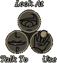

How To Play
Keyboard

Mouse

- CLICK AND HOLD on a room object or inventory item to interact with it.
- CLICK on an item within the inventory panel to set it as the game cursor,
then click to use that item with objects in the world. - DOUBLE-CLICK to clear an inventory item cursor.
- TOUCH BOTTOM OF SCREEN for game controls.